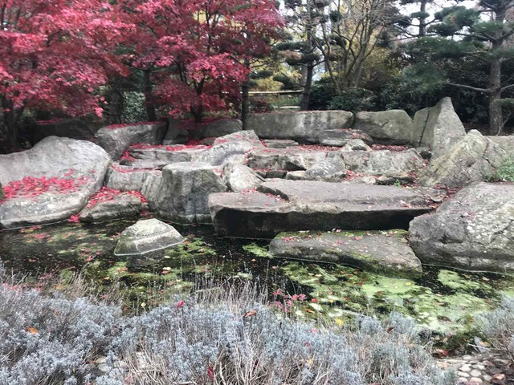
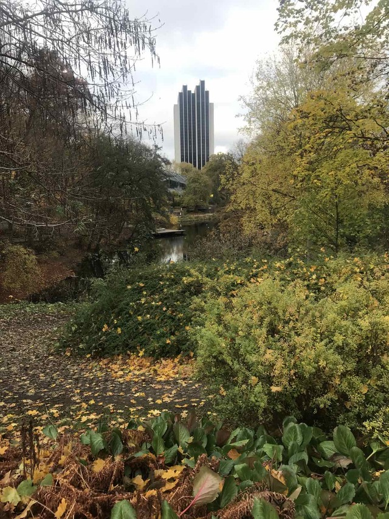

A wonderful city park located just one station from the central station, with a large lake, thousands of various trees, bushes, many artificial cascading waterfalls, spacious green lawns, as well as a large rose garden and light fountain. A separate charm of the park is a section with an incredibly beautiful Japanese garden. In general, this park, which is located in the very center of the city, makes you feel like you are in a forest far from civilization. And friendly squirrels and birds that literally go into your hands make walks in the park unforgettable.
Need more information?
Use link for official page (opened in new tab)Adress:
St. Petersburger Straße 28
20095 Hamburg, Germany

